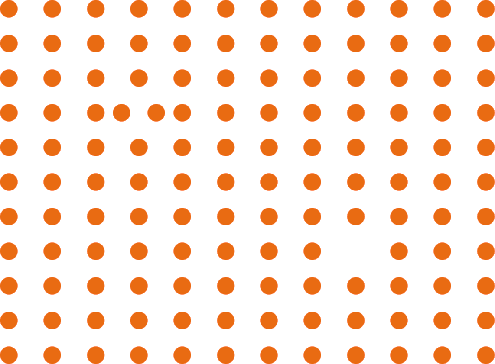
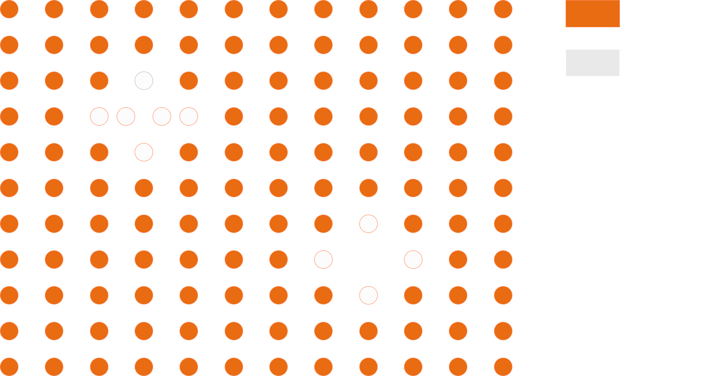
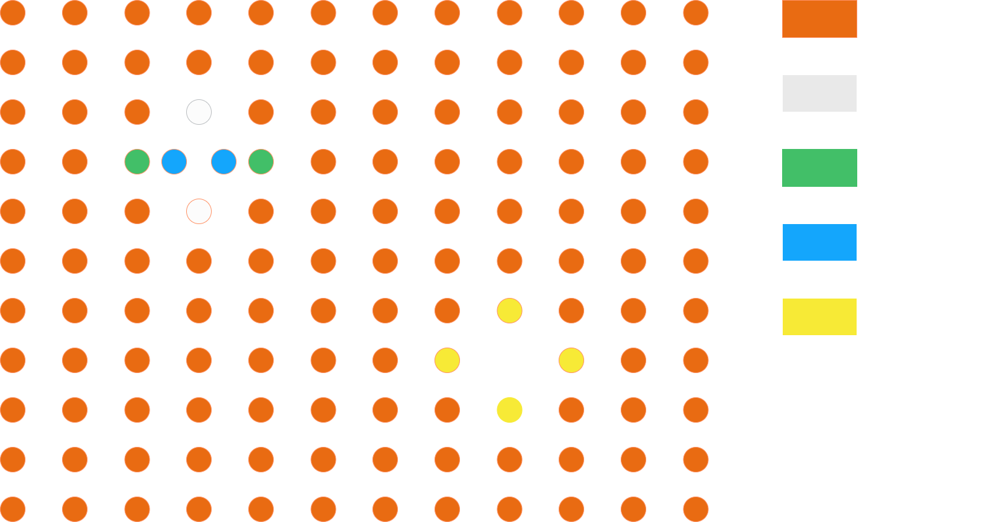
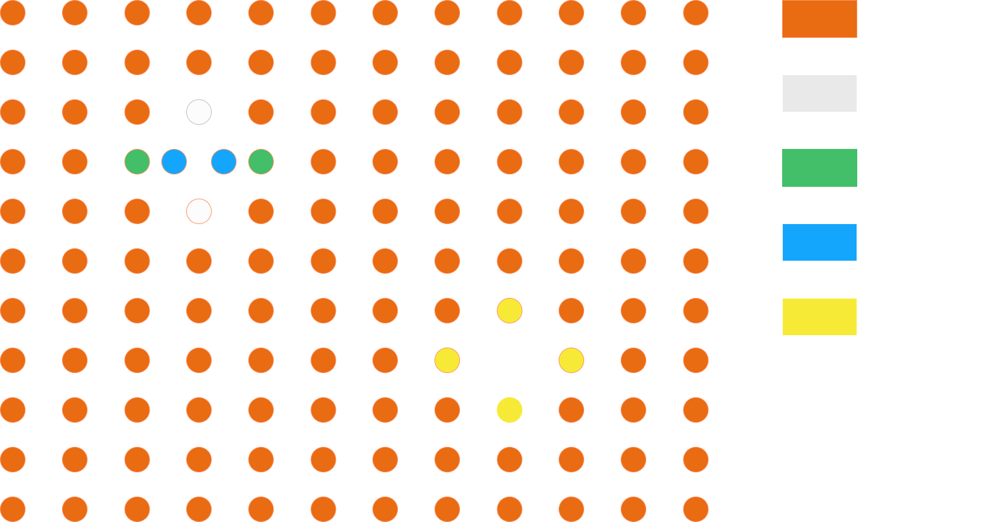
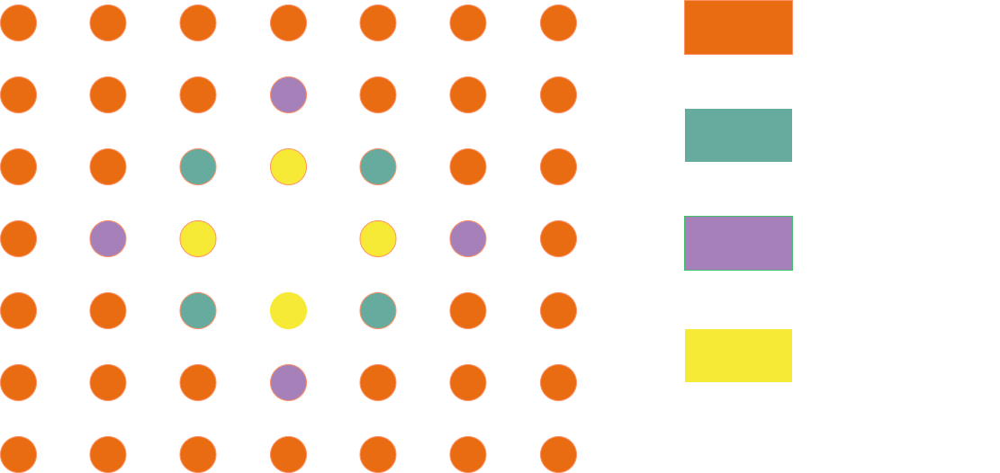

Atomic Environments
During a simulation, pyKMC assigns an atomic environment ID to each atom according to the topology of its local neighborhood. These IDs provide a compact description of local structure and are used to determine where stored reference events may be applicable.
Atomic-environment settings are defined in the [AtomicEnvironment] section of the INI configuration file.
The main parameters are:
style(mandatory): method used to generate the atomic environment ID. Available values arecna,graph,cna/graph, anddiamond/graph.rnei(mandatory): radial cutoff (in Å) used to define the first-neighbor network.rcut(currently required in practice): radial cutoff (in Å) defining the extent of the local environment used for graph-based identification.neighbors_add(optional, default:0): controls whether graph-based identification is extended to atoms neighboring non-crystalline sites when using a hybrid style.
How atomic environments are used in pyKMC
Atomic environments provide the connection between the current atomic configuration and the reference events stored by pyKMC.
When a reference event is created, pyKMC identifies the atom that moves the most during the transition. This atom is used as the central atom of the event.
For this atom, pyKMC constructs graph-based topology IDs for the local environments corresponding to:
- the initial minimum,
- the saddle point,
- the final minimum.
For the forward event, the graph ID of the initial minimum is stored as the event's event_id. For the corresponding backward event, the transition is reversed, so the forward event's final minimum becomes the initial minimum of the backward event and its graph ID is stored as the backward event's event_id. The graph IDs of the saddle point and the final state of each direction are also stored with the reference event.
During a KMC step, pyKMC computes atomic environment IDs for the atoms in the current configuration according to the selected style.
Atomic environment IDs are also used to determine when new event searches are required. pyKMC keeps track of previously visited environment IDs. When an environment ID is encountered for the first time, atoms carrying that environment are selected as central atoms for new event searches. The number of searches performed for each newly encountered environment is controlled by the nsearch parameter in the [EventSearch] section.
For each stored reference event, pyKMC then searches for atoms whose current environment ID matches the event's event_id. The reference event is refined only around matching atoms. If several atoms have the same matching environment, the event may be refined around each of them. Symmetry-equivalent realizations of the event are also considered.
Conceptually, the procedure is:
- Compute atomic environment IDs for the current configuration.
- Identify environment IDs that have not been encountered previously.
- For each newly encountered environment, perform new event searches around atoms carrying that environment.
- Identify stored reference events whose
event_idis present in the current configuration. - Find the atoms whose environment IDs match each applicable reference event's
event_id. - Refine the reference event around each compatible atom.
- Use successful refinements to build the set of events available to the KMC step.
Atomic-environment matching therefore acts as an initial structural filter. Reference events do not need to be refined around every atom in the system, only around atoms with a compatible local topology.
Environment styles
The style parameter determines how the environment ID of each atom in the current configuration is calculated.
cna
The cna style uses Common Neighbor Analysis (CNA) to distinguish crystalline from non-crystalline local environments.
pyKMC analyzes the connectivity between an atom and its first neighbors. Environments matching recognized crystalline CNA signatures are assigned the ID crystal, while all other environments are assigned noncrystal.
The current implementation recognizes:
- FCC/HCP local order,
- BCC local order,
- icosahedral local order.
Because all recognized crystalline environments receive the same crystal ID and all other environments receive noncrystal, this style provides a coarse structural classification rather than a unique description of each local topology.


Current implementation note: reference-event IDs are generated using graph-based topology IDs, while the pure
cnastyle produces onlycrystalandnoncrystal. In the standard event-matching workflow, reference events are selected by directly matching their graph-basedevent_idagainst the current atomic-environment IDs. Therefore, purecnais not currently compatible with the standard reference-event matching/refinement workflow unless additional handling is introduced.
graph
The graph style provides a detailed description of local topology.
For each central atom, atoms within rcut form the vertices of a graph. First-neighbor relationships defined by rnei form the edges.
pyKMC uses pyNauty to compute a canonical certificate for this graph. This certificate is then used to construct the atomic environment ID.
Local environments having the same graph topology therefore receive the same graph-based identifier.

The graph style is useful when detailed local topology is required throughout the system. However, graph construction is more detailed than the simple crystalline/non-crystalline classification provided by CNA.
Current implementation note: In the current implementation, graph-based environment IDs describe connectivity only. Atomic species are not encoded in the pyNauty graph, so environments with the same topology but different chemical identities can receive the same graph ID.
cna/graph
The cna/graph style combines CNA with graph-based identification.
CNA is first applied to every atom. Atoms belonging to recognized crystalline environments initially retain the simple crystal ID, while atoms classified as noncrystal are assigned detailed graph-based IDs.
This approach is particularly useful for systems that are predominantly crystalline but contain localized defects such as vacancies, interstitials, surfaces, or other structurally perturbed regions.
Instead of computing detailed graph IDs throughout the perfect crystal, graph identification is concentrated around non-crystalline regions.

diamond/graph
The diamond/graph style provides a similar hybrid approach for diamond-type crystalline structures.
pyKMC first constructs a second-neighbor network and uses it to identify atoms belonging to the crystalline diamond environment. This identification is based on the second-neighbor structural analysis described in OVITO's Identify Diamond Structure method and by Maras et al. (2016).
Atoms identified as belonging to the regular diamond crystal retain the crystal ID, while atoms classified as noncrystal receive detailed graph-based IDs.
As with cna/graph, the purpose is to concentrate detailed topology identification around defects and other structurally perturbed regions rather than throughout the regular crystal.
Which style should I use?
| Style | Typical use | Description |
|---|---|---|
cna |
Coarse crystal/non-crystal classification | Produces crystal and noncrystal IDs. In the current implementation, it is not compatible with the standard graph-based reference-event matching workflow. |
graph |
Detailed topology throughout the system | Computes a graph-based environment ID for every atom. |
cna/graph |
Conventional crystalline materials containing localized defects | Uses CNA in regular crystalline regions and detailed graph IDs around non-crystalline regions. |
diamond/graph |
Diamond-type crystals containing localized defects | Uses diamond-structure identification in the regular crystal and graph IDs around non-crystalline regions. |
For a predominantly crystalline system whose bulk structure is recognized by the CNA implementation (for example FCC/HCP or BCC) and that contains localized defects, cna/graph is generally the most natural hybrid choice.
For diamond-type crystalline systems, use diamond/graph.
Use graph when detailed topology must be distinguished throughout the system rather than only around defects.
Choosing the parameters
rnei
rnei defines the first-neighbor network.
Atoms separated by less than this cutoff are considered direct neighbors. This neighbor network is used both by CNA-based methods and when constructing graph edges.
Choosing rnei correctly is important because it directly changes the topology seen by pyKMC.
If rnei is too small, true first neighbors may be excluded. This can break expected CNA signatures and remove edges that should be present in graph-based environments.
If rnei is too large, atoms belonging to the second or more distant coordination shells may incorrectly be treated as first neighbors, again changing both CNA classification and graph topology.
For crystalline systems, a useful starting point is therefore a cutoff lying between the first and second coordination-shell distances.
For relaxed or finite-temperature configurations, the cutoff should not be placed too close to the first-neighbor distance. Enough margin should be allowed for thermal motion and small structural relaxation without repeatedly changing the neighbor network.
Inspection of the radial distribution function or known coordination-shell distances can help select an appropriate value.
rcut
rcut defines the spatial extent of the local environment used for graph-based identification.
Atoms within rcut of the central atom are included as vertices of the local graph, while rnei determines the connections between those vertices.
The value of rcut controls how much structural context is contained in an environment ID.
If rcut is too small, two physically different environments may appear identical because the structural feature distinguishing them lies outside the selected region.
Increasing rcut includes more structural information and can distinguish environments over a larger length scale. However, it also creates larger graphs and increases the work required for graph construction and certificate computation. A larger rcut may also distinguish local topologies that share the same possible events. Because pyKMC treats distinct environment IDs as separately encountered environments, this can increase the number of event searches without necessarily introducing new event types.
The goal is therefore not to make rcut as large as possible. It should be large enough to capture the local structural differences relevant to the events being modeled while avoiding unnecessary distant atoms.
A practical procedure is to test representative configurations and check that:
- environments that should be treated as equivalent receive the same ID;
- physically different defect environments receive different IDs;
- small thermal or elastic distortions do not produce unnecessary changes in topology.
For graph-based styles, rcut should always be chosen together with rnei, since rcut determines which atoms belong to the graph while rnei determines how those atoms are connected.
Current implementation note: although
rcutis currently declared as optional in the configuration model, the Atomic Environment initialization expects anrcutneighbor list. Therefore,rcutshould currently be provided in the[AtomicEnvironment]section.
neighbors_add
neighbors_add is used with the hybrid cna/graph and diamond/graph styles.
In these styles, atoms belonging to the regular crystal normally retain the generic crystal ID, while atoms identified as non-crystalline receive detailed graph-based IDs.
This distinction becomes important when reference events are created.
The central atom of a reference event is the atom that moves the most during the transition, and the stored event ID for that atom is graph-based.
Consider an event discovered near a defect. The atom that moves the most may not be the atom initially identified as non-crystalline. It may instead be one of its neighboring atoms.
That neighboring atom may originally have been classified as crystal. If it continues to carry only the generic crystal ID, its environment cannot be matched directly to the detailed graph-based event_id stored for the reference event.
neighbors_add addresses this situation by extending graph-based identification beyond atoms initially classified as noncrystal.
With:
graph IDs are assigned only to atoms classified as noncrystal.
With:
graph IDs are also assigned to the first neighbors of those non-crystalline atoms.
More generally, setting neighbors_add = N extends graph-based identification to the N-th neighbor shell of the initially non-crystalline atoms.
This is particularly useful around defects such as vacancies, where atoms neighboring the defect may participate directly in migration events.

Example
Consider a predominantly crystalline material containing localized defects such as vacancies. A possible configuration is:
In this example:
style = cna/graphis used because most atoms belong to the regular crystal while detailed topology is needed around defects.rnei = 3.0Å defines which atoms are considered first neighbors and therefore determines CNA signatures and graph connectivity.rcut = 6.5Å determines the spatial extent of each detailed graph-based environment.neighbors_add = 1extends graph-based identification to atoms immediately surrounding non-crystalline sites, allowing neighboring atoms involved in defect migration events to carry detailed graph IDs.
The numerical values of rnei and rcut are material-dependent. They should be determined from the structure being simulated and should not be copied directly to a different material without verification.
References
- E. Maras et al., Global transition path search for dislocation formation in Ge on Si(001), Computer Physics Communications (2016). https://doi.org/10.1016/j.cpc.2016.04.001